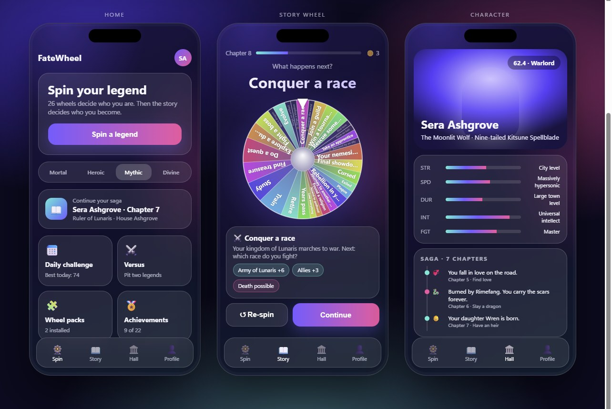
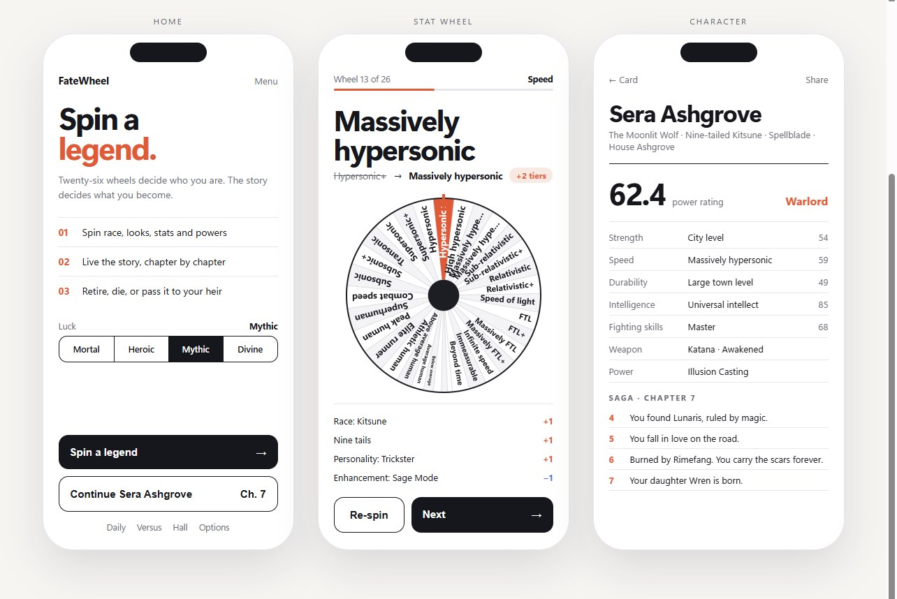
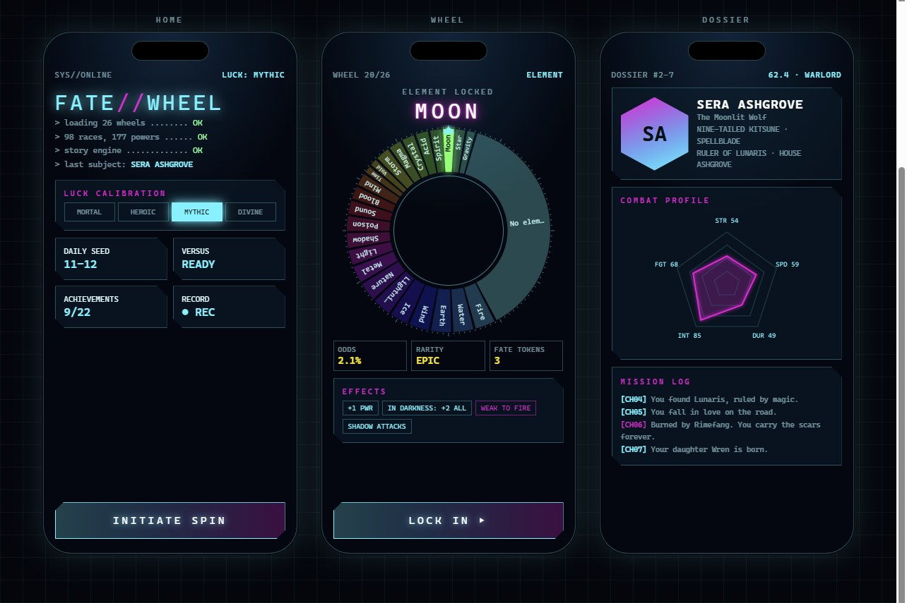
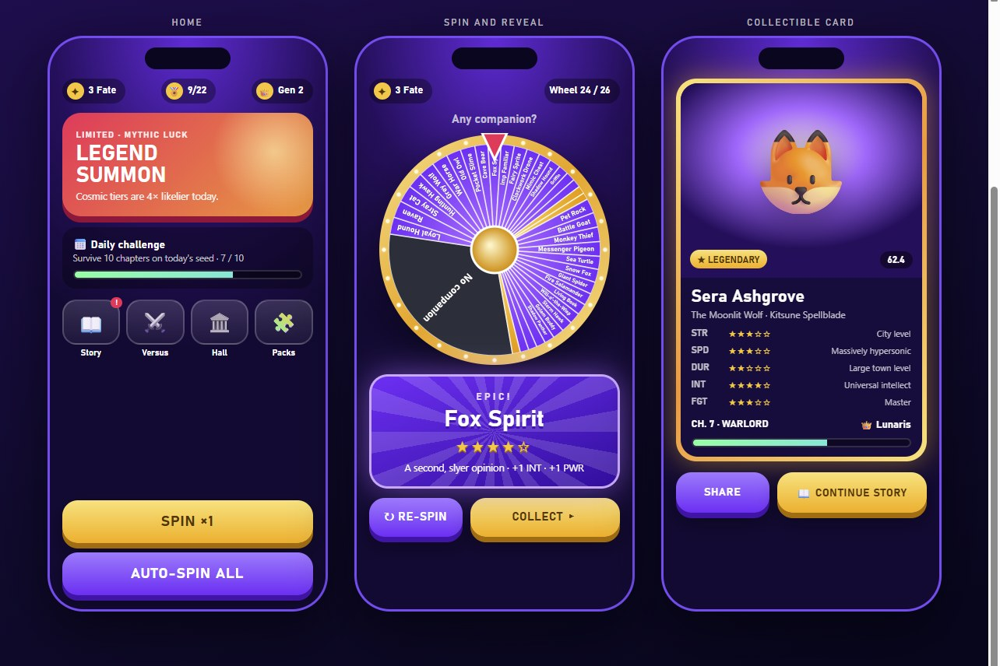

Modern mockups
Four directions for a more modern FateWheel. Each page shows three phone screens (home, a spin, and the character with their saga) built with the real game data: a Nine-tailed Kitsune Spellblade, chapter 7 of her story.

1 · GlassAurora gradients, frosted cards, a glossy wheel and bottom tabs. Feels like a current mobile app.

2 · MinimalLight and editorial: one accent colour, big type, a flat wheel and results that explain every buff.

3 · HUDSci-fi display: a ring wheel with readouts, angled panels, a stat radar and a mission log.

4 · GachaBold mobile game: rarity colours, a gold bulb rim, rarity reveals and a collectible card.
The original four theme mockups are in mockups/. Open these pages through a local server (for example python -m http.server in the project folder) so they can load the game data.